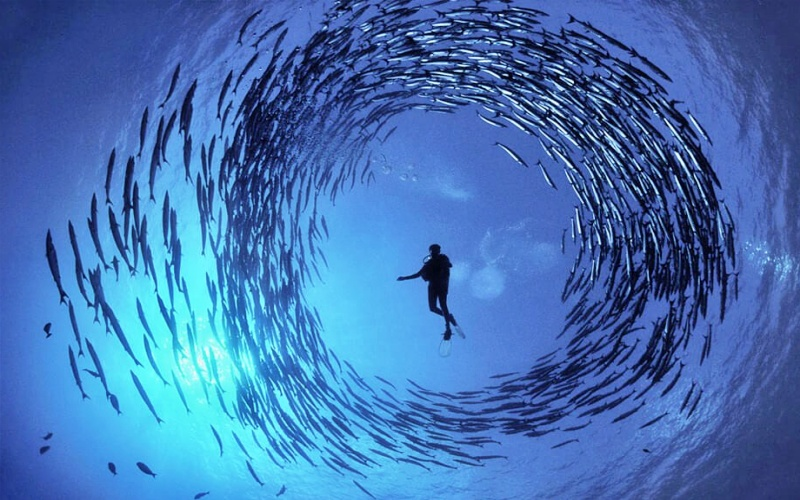

Top Dive Sites in Palau / Micronesia
Blue Corner is a dive site that holds in itself many divers dreams... it's just a matter of timing! Although just about everyone wants to dive it, it is not a dive site for every diver to try out. As a matter of fact, the currents can be extremely strong and unsettle many a beginners. If it comes from the East and mixes with rich upwellings, then you're in for a treat: reef sharks by the dozen, large shoals of trevallies (jacks) and barracudas, sometimes manta rays and even whale-sharks come in to feast on the plankton-rich waters! The reef life is also very dense and diverse, though it is rarely the purpose and focus of the visiting divers...
The reef runs as a 10m deep ridge for quite a while then drops onto a ledge around 15m, and from there plunges into the abyss, into the blue! Pay attention to your guide and be reactive to the his/her directions to stay safe in the current.
With a little experience and patience, Blue Corner will soon make a dashing entry in your TOP 5 dive sites!
» Type of dive site :
"Drop-off Drift dive & Rocky ridge Coral reef"
» Depth : Maximum 35, Maximum 25
» Visibility : 30m or more!
» Current : Can be EXTREMELY strong
» Boat trip duration : 1 hour from Koror
Palau is world-famous and globally recognized for its marine biodiversity
and
its efforts in oceon protection and conservation.
Palau is open and safe for you! For more information on how you can vacation in this Pristine Paradise see our Home pagefor the latest travel requirements.